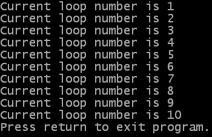
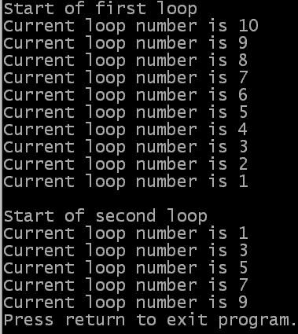

For <variable> = <expression 1> To <expression 2>
; Instructions
Next
The operation of a For...Next loop is that you use a numeric variable as a counter and put the name of the variable in place of the <variable> in the above structure. The counter variable is set to the value of expression 1 before the start of the loop. The loop starts by comparing the current value of the counter variable to the value of expression 2 (which is the value to count to). If the counter has passed the value of expression 2 then the loop exits and the program continues executing from the next instruction after the Next keyword.
If the counter variable has not reached the value of expression 2 then the instructions between the For and Next keywords are executed. The counter variable is then increased by one and the program starts executing from the start of the loop again (where it checks the value of the variable).
Note that the counter has to pass the value of expression 2 for the loop to stop. That means the instructions will be executed in the loop when the counter variable has the same value as expression 2.
The example below shows a simple example of a For...Next loop. You can also get the source here:
If OpenConsole()
the_other = 10
For something=1 To the_other
PrintN("Current loop number is "+Str(something))
Next
PrintN("Press return to exit program.")
Input()
CloseConsole()
EndIf
End
 As you can see if you run the example (also shown in the example output to the side of this paragraph) you will see that the first time in the loop the value of the something variable (which is being used as the counter) is 1. This is the value of the first expression (which is simply the numeric constant one).
At each iteration (another common word for repetition) of the loop you can see that the value of something is increased by one. Finally, the last time round the loop occurs when the value of the counter is 10 - this is the same value as the the_other variable, which is used as the second expression, controlling the end of the loop.
For <variable> = <expression 1> To <expression 2> [Step <expression 3>]
; Instructions
Next
It is shown in square brackets to indicate that it is an optional part of the command (and
obviously, by leaving it out you are using the For...Next loop in the same way as the top of
this page). However, when you use the Step keyword the value of expression 3 is the value which
is added to the counter variable. For example, if you use "Step -1" then the
For...Next loop will count backwards. If you use "Step 10" then it will count forwards in
steps of 10.
This example demonstrates the use of the Step keyword in For...Next loops. You also get it from here:
If OpenConsole()
PrintN("Start of first loop")
the_other = 1
For something=10 To the_other Step -1
PrintN("Current loop number is "+Str(something))
Next
PrintN("")
PrintN("Start of second loop")
For something=1 To 10 Step 2
PrintN("Current loop number is "+Str(something))
Next
PrintN("Press return to exit program.")
Input()
CloseConsole()
EndIf
End
 As you can see from the output, the value of the something variable increases by the value of expression 3 each time it is printed, in both loops (-1 - increasing by a negative number decreases - and 2 respectively). In the second loop you will notice that 10, the end value for the loop, is never printed. That is because the value of the something variable is 9 and when adding 2 gives 11. This is past the end value of the loop, so the loop ends here.
| Previous topic | Chapter contents | Next topic |
|---|---|---|
| Choosing one set of instructions from a set | User Guide contents | Repeating instructions while something is happening |